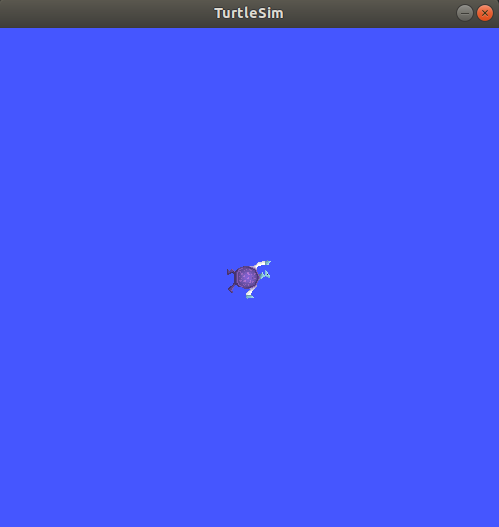
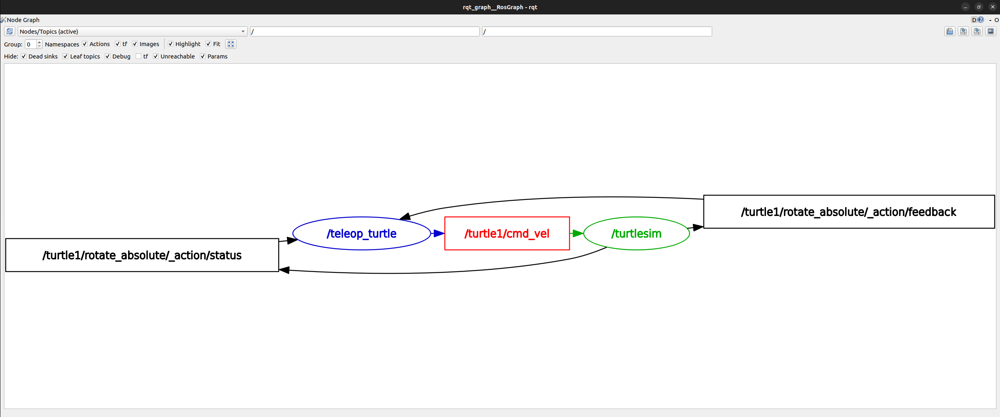
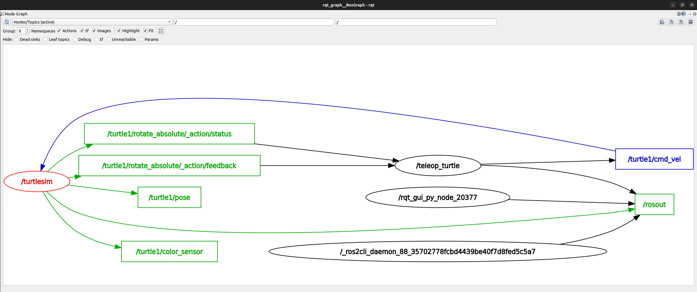
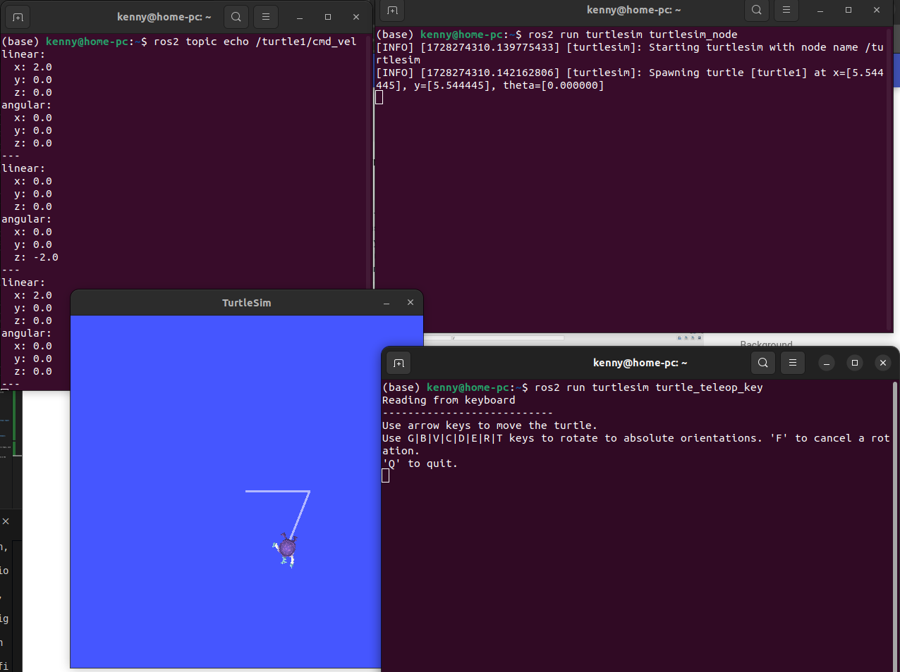
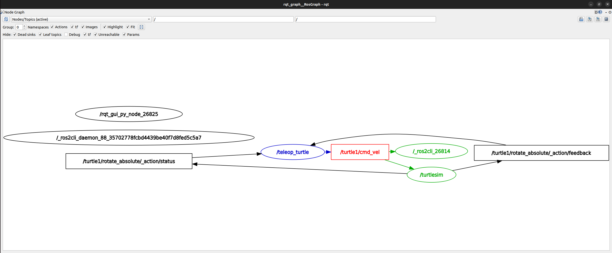
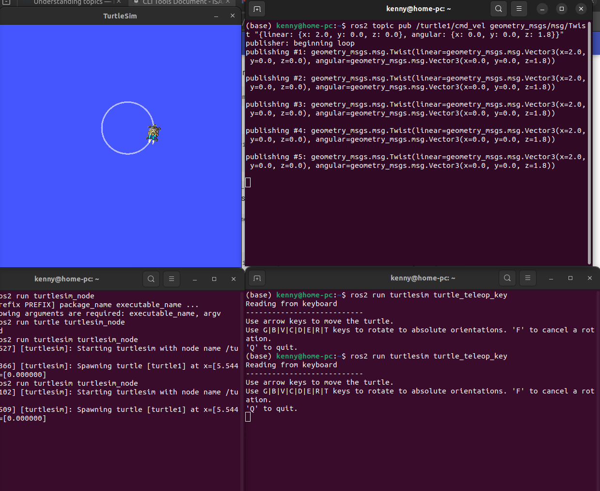

CLI Tools Document¶
Configuring environment¶
Source the setup files¶
You will need to run this command on every new shell you open to have access to the ROS 2 commands, like so:
source /opt/ros/humble/setup.bash
# or below so you don't need to source every time
echo "source /opt/ros/humble/setup.bash" >> ~/.bashrc
Check environment variables¶
Only after source will these environment variables be set
Check that variables like ROS_DISTRO and ROS_VERSION are set.
The ROS_DOMAIN_ID variable¶
For ROS 2 nodes on the same domain to freely communicate. All ROS 2 notes use domain ID 0 by default. To avoid interference between different groups of computers running ROS 2 on the same network, a different domain ID should be set for each group. Choose a domain ID between 0 and 101, inclusive. For example, 88
export ROS_DOMAIN_ID=88
# Or to maintain this setting between shell sessions, add the command to your shell startup script:
echo "export ROS_DOMAIN_ID=88" >> ~/.bashrc
The ROS_LOCALHOST_ONLY variable¶
ROS_LOCALHOST_ONLY allows you to limit ROS 2 communication to localhost only, so that your ROS 2 system, and its topics, services, and actions will not be visible to other computers on the local network.
export ROS_LOCALHOST_ONLY=1
# Or to maintain this setting between shell sessions, add the command to your shell startup script:
echo "export ROS_LOCALHOST_ONLY=1" >> ~/.bashrc
Using turtlesim, ros2, and rpt¶
Concepts¶
Turtlesim is a lightweight simulator for learning ROS 2. It illustrates what ROS 2 does at the most basic level to give you an idea of what you will do with a real robot or a robot simulation later on.
The ros2 tool is how the user manages, introspects, and interacts with a ROS system. It supports multiple commands that target different aspects of the system and its operation. One might use it to start a node, set a parameter, listen to a topic, and many more. The ros2 tool is part of the core ROS 2 installation.
rqt is a graphical user interface (GUI) tool for ROS 2. Everything done in rqt can be done on the command line, but rqt provides a more user-friendly way to manipulate ROS 2 elements.
Install turtlesim¶
Check that the package is installed:
Expected output:
Start turtlesim¶
What you are expected to see:

[INFO] [turtlesim]: Starting turtlesim with node name /turtlesim
[INFO] [turtlesim]: Spawning turtle [turtle1] at x=[5.544445], y=[5.544445], theta=[0.000000]
Use turtlesim¶
Open another terminal and source ROS 2 again.
Run a new node to control the turtle in the first node:You can then use the arrow keys on your keyboard to control the turtle.
DO NOT CLOSE THE TERMINALS YET for the next section
Install rqt¶
run rqt:
Use rqt¶
select Plugins > Services > Service Caller from the menu bar, you can call different services.

Plugins > Services > Service Caller
Try the spawn service¶
Select /clear then Call can clear the line drawn on turtlesim.
Select /spawn
You can double click between the empty single quotes in the Expression column to give value to name, e.g., Kenny

You can change x and y to different value e.g. 1.0 and 1.0 so that the turtle will spawn in different lcoation.
Click Call, the turtle will then spawned in the turtlesim window.
Try the set_pen service¶
Call service /turtle1/set_pen and set the pen color and width then call again, the pen color will change.
Remapping¶
In order to control Kenny. You can remap the cmd_vel topic. Create a new terminal, source ROS 2, and run:
Close turtlesim¶
Close the turtlesim_node terminal and the turtle_teleop_key terminals.
Understanding nodes¶
Background¶
The ROS 2 graph¶
The ROS graph is a network of ROS 2 elements processing data together at the same time. It encompasses all executables and the connections between them if you were to map them all out and visualize them.
Nodes in ROS 2¶
Each node in ROS should be responsible for a single, modular purpose, e.g. controlling the wheel motors or publishing the sensor data from a laser range-finder. Each node can send and receive data from other nodes via topics, services, actions, or parameters.

Tasks¶
ros2 run¶
The command ros2 run launches an executable from a package.
To run turtlesim, open a new terminal, and enter the following command in one terminal.
Open another new terminal and start the teleop node with the command:
Run the following command to see the node names:
The terminal should output two active nodes by their names:
Remapping¶
Remapping allows you to reassign default node properties, like node name, topic names, service names, etc.,
To open a turtlesim with name /my_turtle instead of /turtlesim, in a new terminal:
my_turtle is created, you can verify using ros2 node list.
ros2 node info¶
To access more information about the nodes, e.g., /my_turtle node you just created.
/my_turtle
Subscribers:
/parameter_events: rcl_interfaces/msg/ParameterEvent
/turtle1/cmd_vel: geometry_msgs/msg/Twist
Publishers:
/parameter_events: rcl_interfaces/msg/ParameterEvent
/rosout: rcl_interfaces/msg/Log
/turtle1/color_sensor: turtlesim/msg/Color
/turtle1/pose: turtlesim/msg/Pose
Service Servers:
/clear: std_srvs/srv/Empty
/kill: turtlesim/srv/Kill
/my_turtle/describe_parameters: rcl_interfaces/srv/DescribeParameters
/my_turtle/get_parameter_types: rcl_interfaces/srv/GetParameterTypes
/my_turtle/get_parameters: rcl_interfaces/srv/GetParameters
/my_turtle/list_parameters: rcl_interfaces/srv/ListParameters
/my_turtle/set_parameters: rcl_interfaces/srv/SetParameters
/my_turtle/set_parameters_atomically: rcl_interfaces/srv/SetParametersAtomically
/reset: std_srvs/srv/Empty
/spawn: turtlesim/srv/Spawn
/turtle1/set_pen: turtlesim/srv/SetPen
/turtle1/teleport_absolute: turtlesim/srv/TeleportAbsolute
/turtle1/teleport_relative: turtlesim/srv/TeleportRelative
Service Clients:
Action Servers:
/turtle1/rotate_absolute: turtlesim/action/RotateAbsolute
ros2 node info returns a list of subscribers, publishers, services, and actions. i.e. the ROS graph connections that interact with that node.
If you have both /my_turtle node and /turtlesim node opened, then giving arrow commands on the /teleop_turtle node moves both two simulators.
ros2 run turtlesim turtle_teleop_key
Understanding topics¶
Background¶
ROS 2 breaks complex systems down into many modular nodes. Topics are a vital element of the ROS graph that act as a bus for nodes to exchange messages.

A node may publish data to any number of topics and simultaneously have subscriptions to any number of topics.

Topics are one of the main ways in which data is moved between nodes and therefore between different parts of the system.
Tasks¶
Setup¶
Open a new terminal and create /turtlesim node:
Open another terminal and create /teleop_turtle node:
rqt_graph¶
rqt_graph is used to visualize the changing nodes and topics, as well as the connections between them. Open a new terminal and enter the command:
rqt_graph by opening rqt and selecting Plugins > Introspection > Node Graph.
You should then see:

Changing Top left corner to Nodes/Topics (active) and Groups to 0 so you can see:

It is showing how the /turtlesim ndoe and the /teleop_turtle node are communicating with each other over the /turtle1/cmd_vel topic
ros2 topic list¶
Run the following command to see a list of all the active topics:
output:
ros2 topic list -t will return the same list of topics, with the topic type appended in brackets such as the below output:
/parameter_events [rcl_interfaces/msg/ParameterEvent]
/rosout [rcl_interfaces/msg/Log]
/turtle1/cmd_vel [geometry_msgs/msg/Twist]
/turtle1/color_sensor [turtlesim/msg/Color]
/turtle1/pose [turtlesim/msg/Pose]
The visualize the topics in the graph, uncheck all the boxes under Hide:

For now, though, checked back all those options to avoid confusion.
ros2 topic echo¶
Use ros2 topic echo <topic_name> to see the data begin published on a topic, such as:
Now you can move the turtle in turtlesim to see what is being echo-ed in the terminal. Such as below

Now return to rqt_graph and uncheck the Debug box under Hide.

A new node /_ros2cli_26814 created by the echo command we just ran is subscribed to the /teleop_turtle publisher over the cmd_vel topic just like /turtlesim.
Another wait to look at this is to run the following command
which will return:
The topic type of /turtle1/cmd_vel is geometry_msgs/msg/Twist which means that in the package geometry_msgs there is a msg called Twist.
Run ros2 interface show geometry_msgs/msg/Twist to learn the details of this type of topics.
It outputs:
# This expresses velocity in free space broken into its linear and angular parts.
Vector3 linear
float64 x
float64 y
float64 z
Vector3 angular
float64 x
float64 y
float64 z
Which is the same structure as what is echoed in the screenshot above.
This tells you that the /turtlesim node is expecting a message with two vectors, linear and angular, of three elements each.
ros2 topic pub¶
Now you hcan publish data to a topic directly from the command line using:
For exmaple, you can run the below to make the turtle draws a circle
ros2 topic pub /turtle1/cmd_vel geometry_msgs/msg/Twist "{linear: {x: 2.0, y: 0.0, z: 0.0}, angular: {x: 0.0, y: 0.0, z: 1.8}}"
You can see your turtle moving like:

ros2 interface show¶
Nodes send data over topics using messages. Publishers and Subscribers must send and receive the same type of message to communicate.
Refresh rqt_graph. Now you can see that the ros2 topic pub

You can see that another ros2cli node is publishing over the /turtle1/cmd_vel topic.
Run echo on the pose topic and rechecck rqt_graph:
output:
---
x: 4.457859516143799
y: 6.952967166900635
theta: -1.8562328815460205
linear_velocity: 2.0
angular_velocity: 1.7999999523162842
---
x: 4.449737071990967
y: 6.922015190124512
theta: -1.8274328708648682
linear_velocity: 2.0
angular_velocity: 1.7999999523162842
---
...
rqt Graph:

When publishing messages with timestamps, pub has two methods to automatically fill them out with the current time. For messages with a std_msgs/msg/Header, the header field can be set to auto to fill out the stamp field.
ros2 topic pub /pose geometry_msgs/msg/PoseStamped '{header: "auto", pose: {position: {x: 1.0, y: 2.0, z: 3.0}}}'
If the message does not use a full header, but just has a field with type builtin_interfaces/msg/Time, that can be set to the value now.
ros2 topic pub /reference sensor_msgs/msg/TimeReference '{header: "auto", time_ref: "now", source: "dumy"}'
ros2 topic hz¶
For one last introspection on this process, you can view the rate at which data is published using:
It will return data on the rate at which the /turtlesim node is publishing data to the pose topic.
Recall that you set the rate of turtle1/cmd_vel to publish at a steady 1 Hz using ros2 topic pub --rate 1. If you run the above command with turtle1/cmd_vel instead of turtle1/pose, you will see an average reflecting that rate.